Project 2 involved various techniques for processing images using filters/kernels and frequency analysis to extract and manipulate information. The most important think I learned in this project was how to use gaussian/laplacian kernels as band-pass filters to manipulate images on the frequency domain. I think those concepts will generalize well in computer vision and in other fields involving frequency analysis as well.
Part 1.1 involved implementing the convolution operation from scratch which allows a 2d kernel to be convolved over a 2d image. Below are the two implementations for the convolution operation: the left implementation uses a naive approach with 4 nested for loops whereas the right uses a slightly optimized implementation with only 2 for loops and a matrix multiplication. Both implementations pad the image with 0s and include full boundaries (i.e. no cropping after the convolution). The first row of images below shows the output of the 2-loop implementation, and the second row of images shows the output of the scipy.signal.convolve2d() implementation; the outputs appear to be indistinguishable. The 4-loop implementation is significantly slower than the 2-loop implementation which is significantly slower than the SciPy implementation. Each implementation took approximately 15, 2, and 0.2 seconds to convolve the 9x9 box filter, respectively.
def conv4(im, kernel):
"""Convolution operation (4 loop implementation)"""
# flip kernel
kernel = np.flip(kernel)
im_m, im_n = im.shape[0], im.shape[1]
k_m, k_n = kernel.shape[0], kernel.shape[1]
m_pad, n_pad = k_m-1, k_n-1
# convert to float and pad image
im_pad = np.pad(im.astype(np.float64), ((m_pad,), (n_pad,)))
# convolve
conv = np.zeros((im_m + m_pad, im_n + n_pad), dtype=np.float64)
for c_y in range(im_m + m_pad):
for c_x in range(im_n + n_pad):
for k_y in range(k_m):
for k_x in range(k_n):
conv[c_y, c_x] += im_pad[c_y+k_y, c_x+k_x] * kernel[k_y, k_x]
return conv
def conv2(im, kernel):
"""Convolution operation (2 loop implementation)"""
# flip kernel
kernel = np.flip(kernel)
im_m, im_n = im.shape[0], im.shape[1]
k_m, k_n = kernel.shape[0], kernel.shape[1]
m_pad, n_pad = k_m-1, k_n-1
# convert to float and pad image
im_pad = np.pad(im.astype(np.float64), ((m_pad,), (n_pad,)))
# convolve
conv = np.zeros((im_m + m_pad, im_n + n_pad), dtype=np.float64)
for c_y in range(im_m + m_pad):
for c_x in range(im_n + n_pad):
conv[c_y, c_x] += np.sum(im_pad[c_y:c_y+k_m, c_x:c_x+k_n] * kernel)
return conv
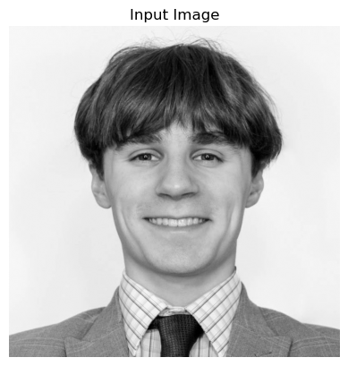
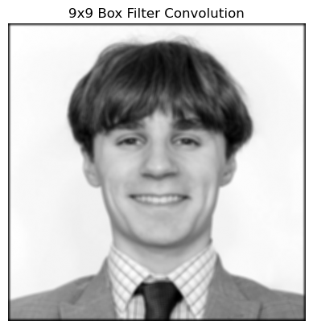
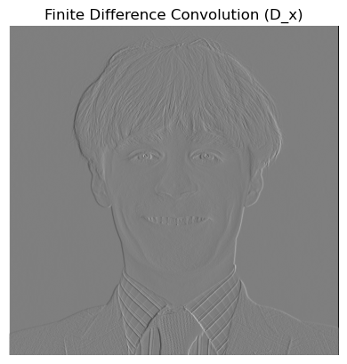
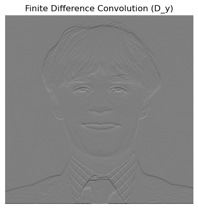
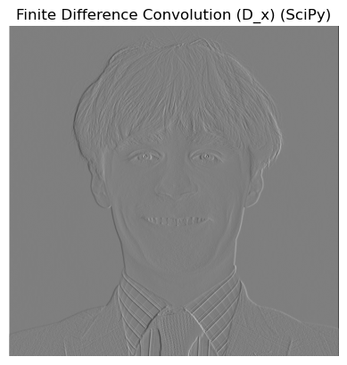
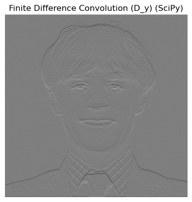
Part 1.2 involved calculating gradients of images using the finite difference method. Below are the original image, the partial derivative with respect to x, the partial derivative with respect to y, the gradient magnitude (l2 norm), and the gradient magnitude binarized with a threshold of 85. The partial derivatives were calculated simply by convolving [1, 0, -1] (for d/dx) and [1, 0, -1]^T (for d/dy) with the image.
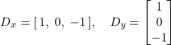
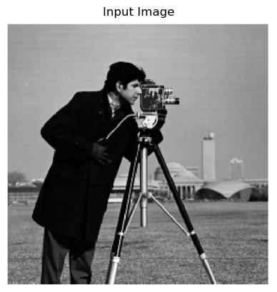
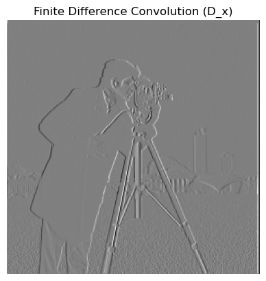
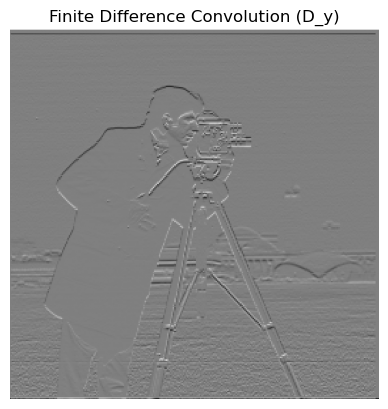
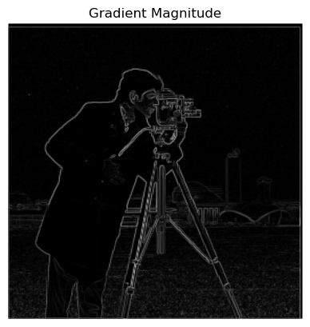
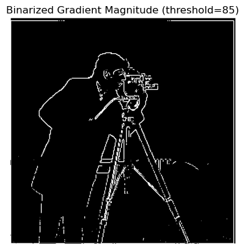
Part 1.3 involved using gaussing smoothing before calculating gradients as implemented by a derivative of gaussian (DoG) filter. The goal of the gaussian smoothing is to remove some of the high frequencies (using the gaussian as a low-pass filter) to reduce the amount of noise in the gradients and hence the amount of noise in the final binarized gradient magnitude, which could be used as an edge detector. The results are shown below: the first row contains uses a gaussian kernel with variance 1, and the second row uses a gaussian kernel with variance 2. Note that the binarization threshold was manually tuned for both (qualitatively).
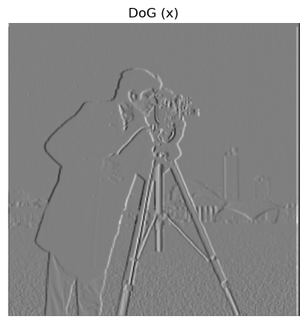
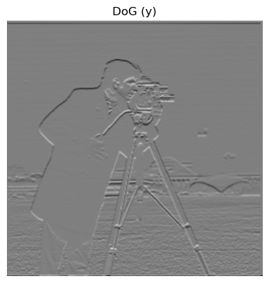
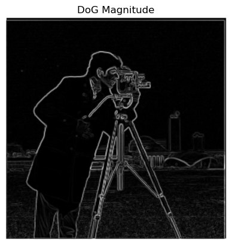
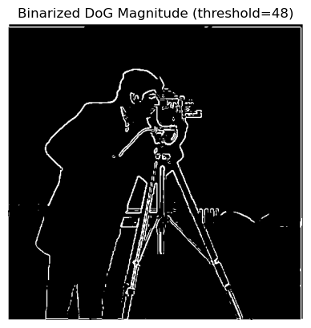
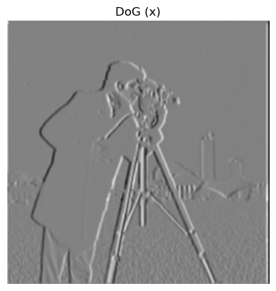
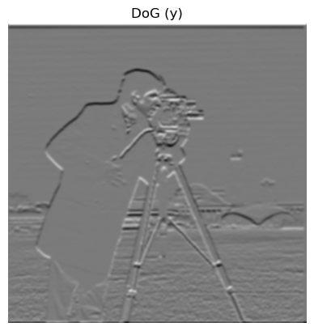
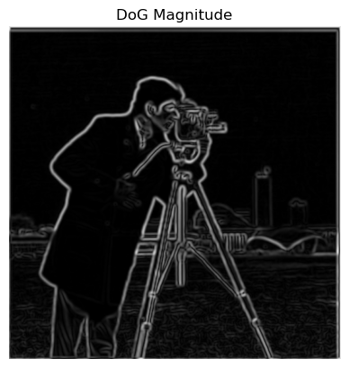
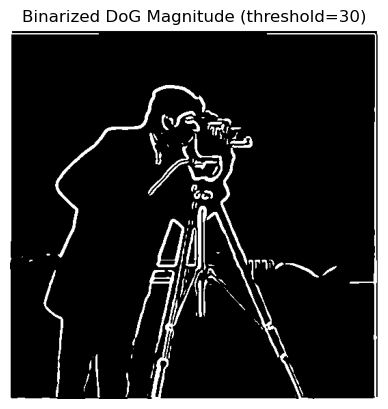
Part 2.1 involved implementing the unsharp mask filter. This filter first applies a gaussian blur to an image as a low pass filter and then takes the difference between the original image and the blurred image to extract the high frequencies. It then adds the high frequencies back to the image to make the image appear to have stronger high frequences and hence appear sharper. Below are examples that include the original image, the sharpened image, the blurred image (low-pass filtered image), and the high frequencies extracted.
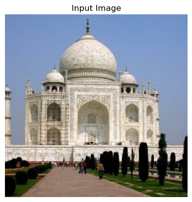
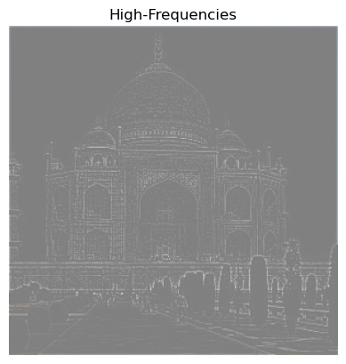
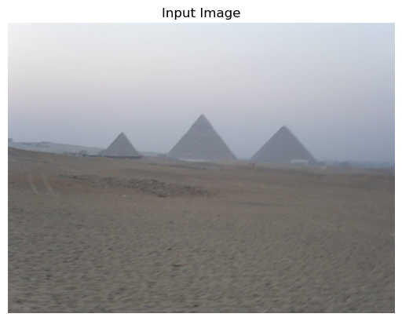
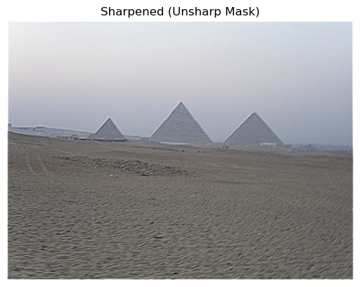
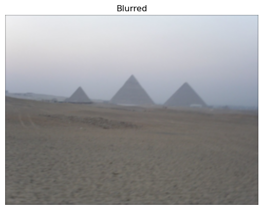
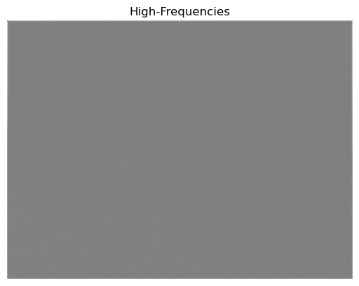
Below are different images with increasing sharpening amounts. Sharpening amount can be increased by adding back a larger multiple of the high frequencies to the original image.
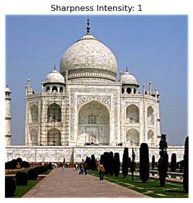
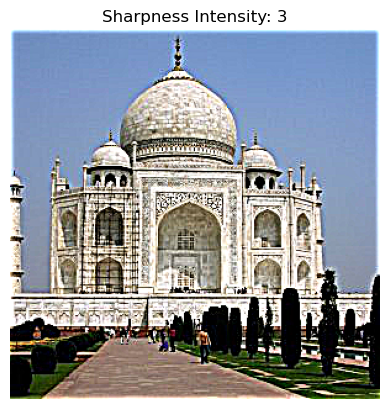
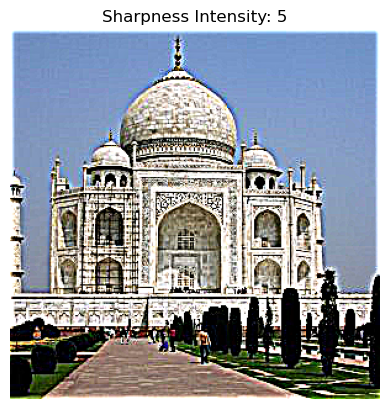
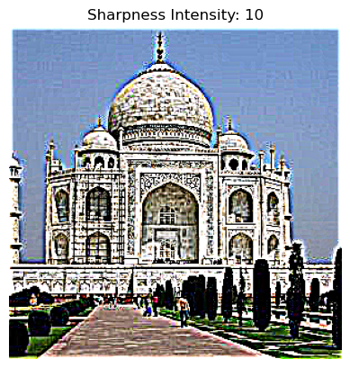
Below is an example of a sharp image that was artificially blurred with a gaussian kernel and then resharped with the unsharp kernel. Clearly, some detail is lost, but the resharpened image appears less blurry and more convincing nonetheless.
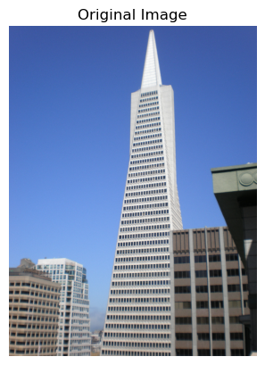
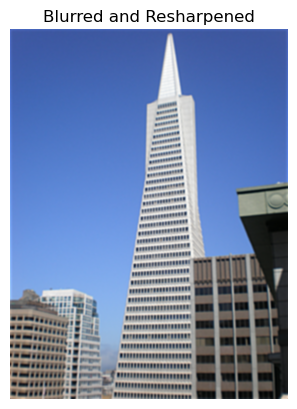
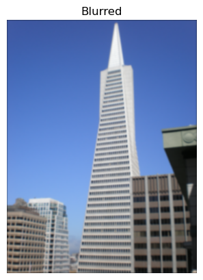
Part 2.2 involved creating hybrid images. A hybrid image is a combination of two images that appears as one of the images when viewed from a short distance but appears as the other image when viewed from farther away. This effect is achieved by blending the high frequencies of one image with the low frequencies of the other. A gaussian blur acts as a low-pass filter for one image while an approximate laplacian convolution acts as a high-pass filter for the other. An example of images throughout the process is shown below. This example used sigma1 and sigma2 parameters 10 and 13, respectively which correspond to the variances of the gaussians used for the low-pass and high-pass filters ("cutoff frequencies").
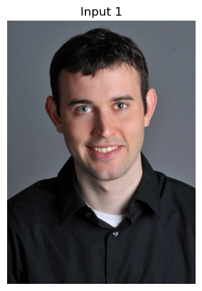
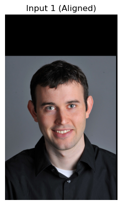
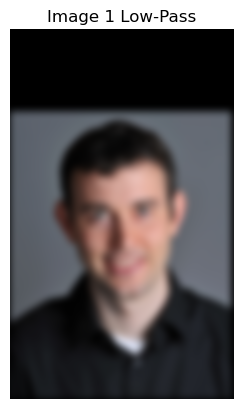
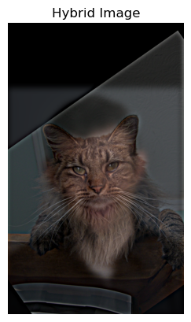
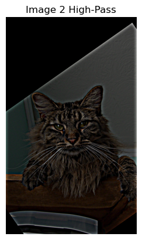
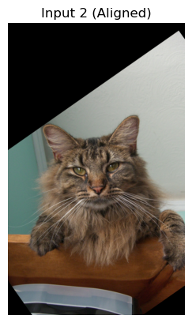
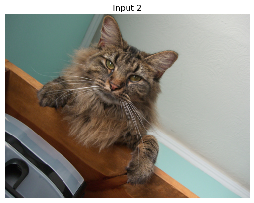
Below are the log Fourier transforms of the images throughout the process.
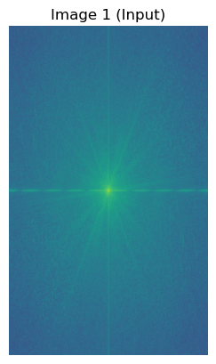
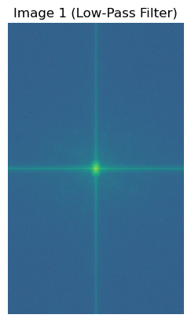
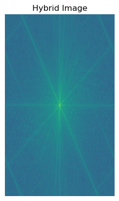
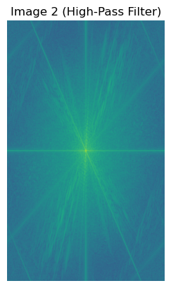
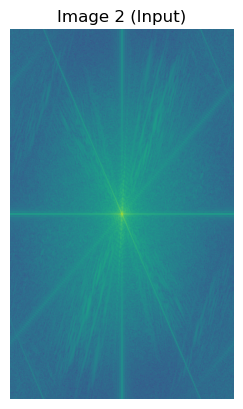
Albert Einstein / Marylin Monroe (sigma1: 3, sigma2: 6)
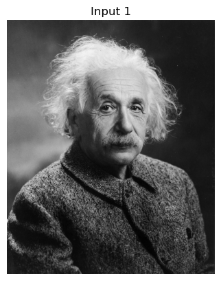
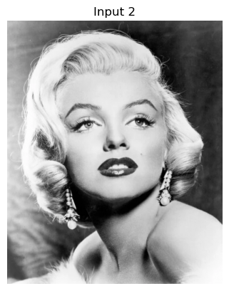
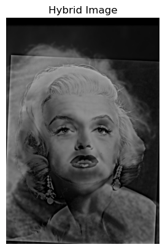
Pizza / Watermelon (sigma1: 1, sigma2: 3)
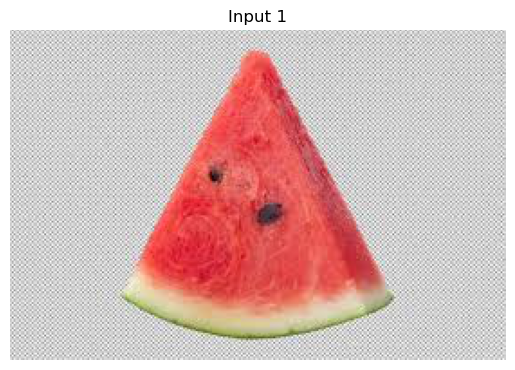
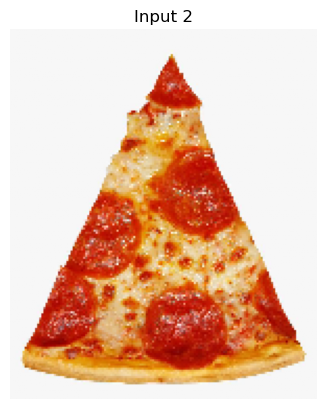
Part 2.3 and 2.4 involved implementation of an image-blending technique. The technique first constructs a gaussian pyramid of each image as well as a gaussian pyramid of the greyscale mask that will be used to blend the two images. Then, laplacian stacks are created from each of the input images, and each level of the mask gaussian stack is used to blend each corresponding layer of the image laplacian stacks. The images' laplacian stacks are then summed together to create a laplacian stack for the blended image, and the layers of the blended image's laplacian stack are then summed together to produce the final blended image. Below are examples of three blended images; the first two use a simple vertical mask, and the last uses a circular mask.